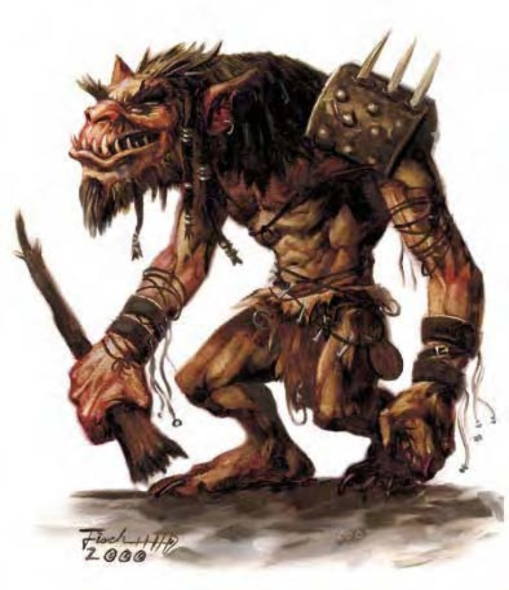

这些大个儿至少9英尺高，厚皮上发达的肌肉高高隆起。他们蓬头垢面、臭不可当。
食人魔是又大又丑的贪婪生物，靠烧杀掳掠为生。他们与其他怪物合作特强凌弱，尤其与食人魔巫师、巨人及巨魔关系密切。
食人魔不但懒散，脾气也坏。他们解决问题的方式只有一种：开打。对于打不过的，要不就忽略，要不就逃。食人魔通常聚集成为小族群，占据任何方便进食场所。他们什么都吃，无论是随手抓来、偷到或杀掉的东西都一股脑吞下肚。食人魔有时也会接受其他邪恶人形生物雇用，包含人类。
成年食人魔约9至10英尺高，重约600至650磅。肤色由暗黄到暗褐不等，衣着则是随意缝制的毛皮，为冲天体臭再添一层风味。
食人魔通晓巨人语，智力超过10的食人魔亦通晓通用语。
食人魔喜好必胜的战斗，偷袭及埋伏远较正当决斗来得吸引他们。虽然他们有足够的智力知道要先发射远程武器以削弱敌军，但食人魔战队与食人魔团打起仗来还是一盘散沙。
| 资料栏位 | 食人魔 (Ogre) 大型巨人 |
| 生命骰 | 4d8+11 (29HP) |
| 先攻 | -1 |
| 速度 | 着生皮甲时30英尺 (6格)；基本速度40英尺 |
| 防御等级 | 16 (-1体型、-1敏捷、+5天生、+3生皮甲)、接触8、措手不及16 |
| 基本攻击/擒抱 | +3 / +12 |
| 攻击 | 巨木棒+8近战 (2d8+7)；或标枪+1远程 (1d8+5) |
| 全力攻击 | 巨木棒+8近战 (2d8+7)；或标枪+1远程 (1d8+5) |
| 占据/触及 | 10英尺 / 10英尺 |
| 特殊攻击 | ― |
| 特殊能力 | 黑暗视觉60英尺、昏暗视觉 |
| 豁免 | 强韧+6、反射+0、意志+1 |
| 属性 | 力量21、敏捷8、体质15、智力6、感知10、魅力7 |
| 技能 | 攀爬+5、聆听+2、侦察+2 |
| 专长 | 健壮、专攻武器 (巨木棒) |
| 环境 | 温带丘陵 (水生食人魔：温带水域) |
| 组织 | 单独、成双、成队 (3-4) 或一团 (5-8) |
| 宝藏 | 标准 |
| 阵营 | 通常混乱邪恶 |
| 进化 | 视人物职业而定 |
| 等级修正值 | +2 |
这些食人魔为水生亚种。他们住在淡水湖或河中，基本行走速度为30英尺、游泳速度40英尺。但他们不一定只出没于水域环境。与一般食人魔的巨木棒不同，他们偏好近战时使用长矛（攻击+8近战，伤害1d8+7）。
优秀的食人魔多半从事野蛮人或战士。
食人魔的人物具有下列种族特性：
― +10力量、-2敏捷、+4体质、-4智力、-4魅力。
― 大型、防御等级-1减值、攻击检定-1减值、“躲藏”检定-4减值、擒抱检定+4加值、举物及负重能力上限为中型人物的两倍。
― 占用空间/可触距离：10英尺 / 10英尺。
― 食人魔的基本行走速度为60英尺。
― 黑暗视觉可达60英尺。
― 种族生命骰：食人魔起始为4级巨人，生命骰4d8、基本攻击加值+3，强韧、反射与意志的基本豁免检定则分别是+4、+1及+1。
― 种族技能：食人魔的巨人等级使他的技能点数为7x (2+智力调整值，最小1)。本职技能为攀爬、聆听与侦察。
― 种族专长：食人魔的巨人等级具有两个专长。
― 武器与防具擅长：食人魔擅长简易与军用武器、轻型与中型防具、盾牌。
― +5天生防御加值。
― 母语：通用语、巨人语。额外语言：矮人语、兽人语、地精语、土族语。
― 适合职业：野蛮人。
― 等级修正值：+2